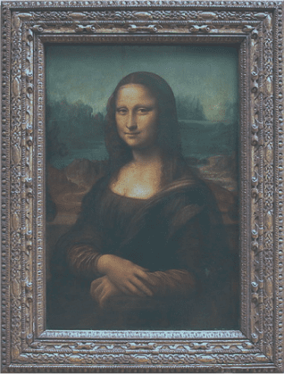

Buy yourself a
Pl
net
With NFT you Literally can do it!
With NFT you Literally can do it!
This new context-keeping UI pattern looks very promising...
nftmap team
· May 15, 2018
· 2 min read
During the last period there was nothing like an explosion of news to leave you thinking of what’s going on there with all this NFTs and crazy acquisitions like Nyan Cat, the autographed tweet from the founder of Twitter, Grimes getting millions of dollars for their NFTs and other pieces of digital art that are being sold.
NFT is considered to be the evolution of fine digital art collecting and opened up opportunities for creators and digital art enthusiasts that look for unique pieces of digital content to buy.
But is NFT just about digital art and is it just for art collectors?
We all liked the feeling of winning battles, taking over territories, countries, armies, planning strategies and working in teams to advance and progress during the game.
We all enjoyed multiplayer modes where we played with friends and other people and directly confronted real people.
What if NFT is something more and it can be an opening for the new audiences or can spark the interest for other types of NFTs?
Classic art
Nft digital art
Well let me present you NFTmap.com
Do you remember those games where you had to take over planets and conquer them?
Check it out here you can take over and buy your own planet but this time it’s a beautifully designed NFT that will be only yours and the interesting part is that it is not just another piece of digital art but also generates tokens daily and in time the value of the NFT planet will rise making it more valuable.
Mars is already booked for Elon Musk…
So sorry!
But you have other choices.
But you don’t only have planets, there are also countries. Beautifully designed pieces of digital art that represent each country. Now with the countries the story is even more interesting, as with the planets — countries also generate tokens daily and the number of tokens is calculated according to the GDP of the country and the crypto index, by crypto index we mean the legality of crypto in all countries. We researched each country to find out the legal status of crypto and how permissive it is and made a rating from 1 to 5.
1 - no data 2 - hostile (full or partial prohibition) 3 - contentious (interpretation of old laws, but is not prohibited directly) 4 - debatable (some legal restrictions on usage of bitcoin) 5 - permissive (legal to use bitcoin)
Based on the formula each country has a certain value and generates a certain amount of tokens each day all around the year.
Now you ask where’s the gamification in all this? Well first of all when you buy a country or a planet you fully own it and you decide what to do with it. Users will be able to sell planets or countries fully or partially by selling just a certain amount of tokens. In the second case a user can have a small piece of country or planet if came to an agreement with the owner on the price of the amount of tokens sold. Imagine a world of NFT where everyone is like in a strategy game, trading and negotiating, buying countries, selling tokens and having fun along the way.
Our concept is an extension of the creator economy and emerging world of fun economics where users engage in active and entertaining sale and acquisition activities. You own something that generates tokens and the value rises constantly.